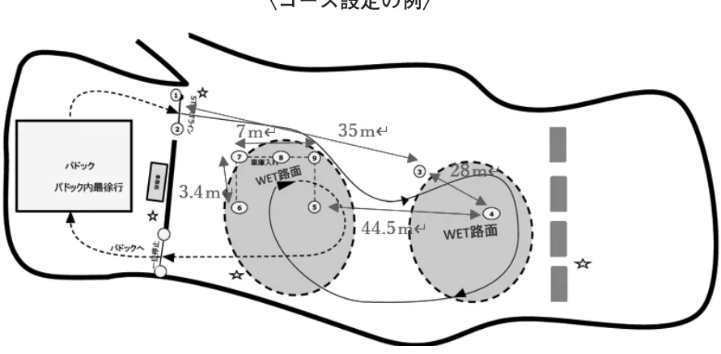
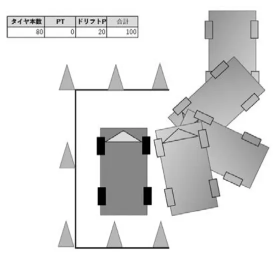
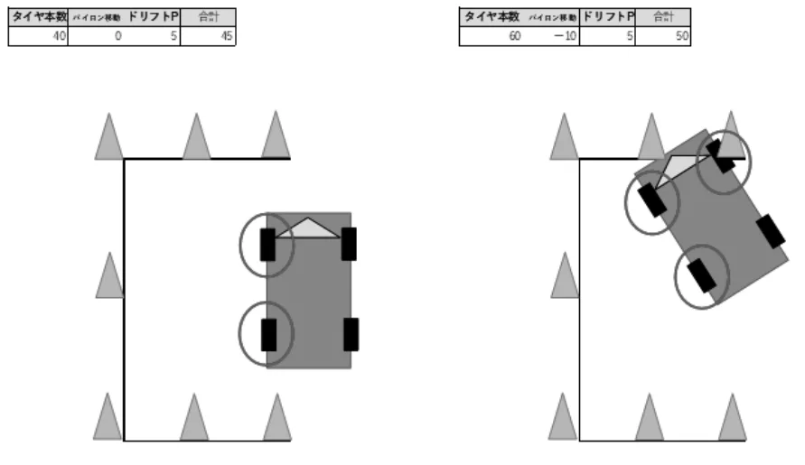

スピード競技開催規定細則ドリフトテスト開催要項_20240527
P.1スピード競技開催規定細則：ドリフトテスト開催要項
２０２４年 ５月２７日制定施行
一般社団法人日本自動車連盟（以下「ＪＡＦ」という。）は、スピード競技開催規定に従い、滑走状態を通じて自動車運転技術の向上ならびに日常の安全運転に貢献するため、ドリフトテスト（以下「テスト」という。）の開催要項を以下の通り定める。
２０１５年より開催されているオートテストのドリフト版として名称を「ドリフトテスト」とする。
１ 定義：
一定区画内に任意に設定された１８０度ターン（または円旋回・「８」の字など）の区間を滑走状態で正確に走行し、滑走状態で停止枠内に正確に帰結するコンテスト
２ 開催場所：
他の交通を遮断し、散水等により駆動形式にかかわらず滑走しやすい路面を作ることができる場所であること（Ｊ ＡＦ公認コースを含む）。
３ 競技会格式：
クローズド、地方
４ 競技会役員：
少なくとも競技会審査委員２名、競技長、およびコース・計時・技術の各委員、ならびに競技会事務局長を置かなければならない。
５ 参加に関する事項：
（１）参加資格
①クローズド：４輪運転免許証所持者
②地方：国内Ｂライセンス以上の所持者
（２）重複参加
１台の車両で複数のドライバーが参加できる。
（３）競技同乗者
練習走行時のみ主催者が認めた講師が同乗することができる。
同乗する場合はドライバーの横の座席に着座し、５．（４）に準じた服装でシートベルトを正確に締めていなければならない。
（４）服装および車両装備
グローブを着用し、長袖・長ズボンなど肌が露出しない服装とする。
また耳が隠れるヘルメットの着用を推奨する。
６ 参加車両：
（１）保安基準に適合したナンバー（自動車登録番号標または車両番号標）付車両。
（２）競技会特別規則に規定することにより参加車両の区分を細分化することができる。
７ 競技方法： 本競技は、以下の走行方法により行われる。
（１）走行方法は、１台の車両がランニングスタート方式で競技コースを走行する単走走行である。
（２）常にコース上には１台のみとする
８ コース設定：
オーガナイザーは、車両への負担を軽減するためにドリフト走行となる路面には散水等を行い、競技会場の形状等に応じて大型の乗用車にも十分な余裕をもたせた以下の走行区間を設定し、競技のスタートに先立ち競技コース図を明示する。
（１）スタートライン
（２）車両が滑走状態を発生させることができる区間（１８０度ターン、または円旋回・「８」の字など）
（３）パイロン等で任意に設定され、滑走状態で進入することができる停止枠
P.2（４）審判員の位置
９ 判定事項：
（１）判定事項は、競技会特別規則または公式通知に明記し、ドライバーズブリーフィングにおいて説明しなければならない。
（２）審判員の判定は次の事項とする。
①反則スタート。
②停止枠内ライン通過／不通過
③パイロン移動・転倒
④主観審査によるドリフトポイント
（３）主観審査によるドリフトポイントは以下の事項が推奨される。
設定コース上の滑走状態を発生させることができる区間走行時および任意に設定された枠内への駐車時の姿勢
〈コース設定の例〉

１０ 順位の決定：
（１）走行タイムおよびポイントを順位要素とし、ポイント数が多く走行タイムが早い参加者がウイナーとなる。
走行タイムは、特別規則書に規定することにより採用しないことができる。
（２）特別規則書に明記しない限りポイントは、以下とする。
| 判定項目 | 要素 | 最大ポイント |
| タイヤの本数 | １本２０Ｐ | ８０Ｐ |
| パイロン移動 | １本あたり－５Ｐ | |
| ドリフトポイント | 主観審査 | ２０Ｐ |


１１ 安全の確保：
（１）競技中は、競技役員を除き、如何なる者もコース上に立ち入ってはならない。
（２）オーガナイザーは、競技会場の形状等に応じて適切なコース設定を行い、特に観衆に対する安全に十分留意すること。
（３）オーガナイザーはコース及び審判員位置について当該競技会審査委員会の確認を得ること。